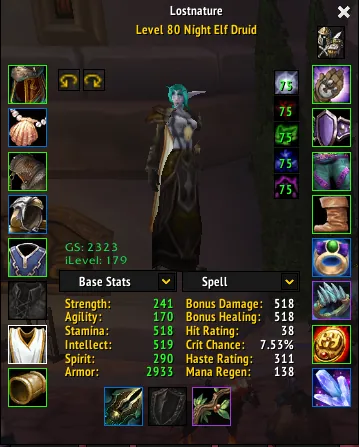
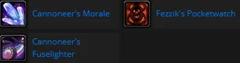

WotLK Warmane Icecrown - Unlock Heroic Dungeons
Reach the item level needed for heroics with cheap BoE, trinkets and relics.
Unlock Heroic Dungeons
To unlock Heroic Dungeons you need 180+ iLevel while filling all available slots.

Step 1: Identify Cheap BoE (Bind on Equip)
Check the Auction House for cheap 264 iLevel BoE. Use this table to get the cheapest one available.
| Slot | Item | Type | Price (g) |
|---|---|---|---|
| Necklace | Wodin's Lucky Necklace | Melee | 519 |
| Shoulder | Stiffened Corpse Shoulderpads | Cloth / Caster | 250 |
| Chest | Carapace of Forgotten Kings | Mail / Melee | 958 |
| Bracers | Crypt Keeper's Bracers | Plate / Caster | 260 |
| Waist | Professor's Bloodied Smock | Leather / Caster | 377 |
| Belt of the Blood Nova | Mail / Caster | 190 | |
| Belt of the Lonely Noble (Caster 264 | Plate / Caster | 140 | |
| Legs | Leggings of Dubious Charms | Mail / Caster | 61 |
| Ring 1 | Harbinger's Bone Band | Tank | 146 |
| Ring 2 | Ring of Rotting Sinew | Melee | 325 |
| Ranged | Rowan's Rifle of Silver Bullets | Ranged | 57 |
Step 2: Get Trinkets and Idol, Sigil, Libram or Totem
You can get 2 good trinkets easily while doing the first quests of the Argent Crusade in Icecrown.
| Quest | Reward |
|---|---|
| Defending The Vanguard | Crusader's Locket (174 item level) |
| The Last Line Of Defense |  (174 item level) |
Step 3: Fill Remaining Slots
Now we fill the remaining slots with uncommon or rare items from the Auction House. I recommend you buy items between 150 and 200 item level.
Here’s a list of cheap 200 item level BoE.
| Slot | Item | Type | Price (g) |
|---|---|---|---|
| Head | Helm of the Lightning Halls | Mail / Caster | 84 |
| Necklace | Burning Skull Pendant | Tank | 100 |
| Emerald Choker | Tank | 110 | |
| Shoulder | Runecaster's Mantle | Cloth | 19 |
| Cloak | Tattered Castle Drape | Cloth / Tank | 130 |
| Cloak of Bloodied Waters | Cloth / Melee | 150 | |
| Reanimator's Cloak | Cloth / Caster | 164 | |
| Chest | Ymirjar Physician's Robe | Leather / Caster | 65 |
| Patina-Coated Breastplate | Plate / Caster | 25 | |
| Aviary Guardsman's Hauberk | Mail / Melee | 30 | |
| Bracers | Drake-Champion's Bracers | Leather / Melee | 193 |
| Bands of the Sky Ring | Mail / Caster | 88 | |
| Bands of Fading Light | Plate / Caster | 23 | |
| Gloves | Awakened Handguards | Leather / Caster | 46 |
| Web Winder Gloves | Plate / Caster | 25 | |
| Waist | Belt of Tasseled Lanterns | Mail / Melee | 80 |
| Waistguard of the Risen Knight | Plate / Tank | 90 | |
| Ring 1 | Stained-Glass Shard Ring | Melee | 122 |
| Main Hand | Librarian's Paper Cutter | Mix | 21 |
| Tankard O' Terror | Melee | 277 | |
| Namlak's Supernumerary Sticker | Melee | 323 | |
| Avool's Sword of Jin | Melee | 351 | |
| Off Hand | Frostbridge Orb | Caster | 79 |
| Ranged | Tracker's Balanced Knives | Melee | 22 |
Build Example: Cloth
For the head, shoulder, chest, wrist, hands, waist, and feet, I recommend you check the duskweave, spiked cobalt or TODO (depending on what you can wear)
| Slot / Armor | Items | Item Level | Price (g) | Source |
|---|---|---|---|---|
| Head | Duskweave Cowl | 154 | 20 - 40 | Auction House / Profession |
| Necklace | Emerald Choker | 200 | 60 | Auction House |
| Shoulder | Duskweave Shoulders | 264 | 250 | Auction House |
| Cloak | Reanimator's Cloak | 200 | 245 | Auction House |
| Chest | Duskweave Robe | 158 | 20 - 40 | Auction House / Profession |
| Bracers | Duskweave Wristwraps | 158 | 20 - 40 | Auction House / Profession |
| Gloves | Duskweave Gloves | 158 | 20 - 40 | Auction House / Profession |
| Waist | Duskweave Belt | 154 | 20 - 40 | Auction House / Profession |
| Legs | Duskweave Leggings | 154 | 20 - 40 | Auction House / Profession |
| Feet | Duskweave Boots | 162 | 20 - 40 | Auction House / Profession |
| Ring 1 | Stained-Glass Shard Ring | 200 | 122 | Auction House |
| Ring 2 | Harbinger's Bone Band | 264 | 200 - 300 | Auction House |
| Trinket 1 | The Last Line Of Defense | 174 | 0 | Quest Reward |
| Trinket 2 | That's What Friends Are For... | 158 | 0 | Quest Reward |
| Main Hand | Daggers: Librarian's Paper Cutter | Daggers: 200 | 30-60 | Auction House |
| 1 or 2 Hand Weapon | Any uncommon 1 or 2 Hand Weapon between 150 and 178 item level | 30-60 | Auction House | |
| Off Hand | Off-hand, Shield | Any uncommon: 150-178 | 30-60 | Auction House |
| Ranged | Thrown: Tracker's Balanced Knives | Thrown: 200 | 30-70 | Auction House |
| Gun: Rowan's Rifle of Silver Bullets | 264 | 20-40 | Auction House | |
| Wand | Any uncommon wand between 150 and 178 item level | 50-60 | Auction House | |
| Libram, Sigil, Totem, Idol: Get it with Honor Points from Zom Bocom | 232 | 12000 Honor Points | Honor Vendor |